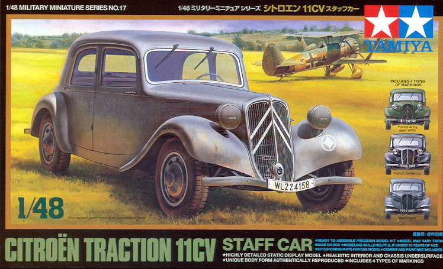
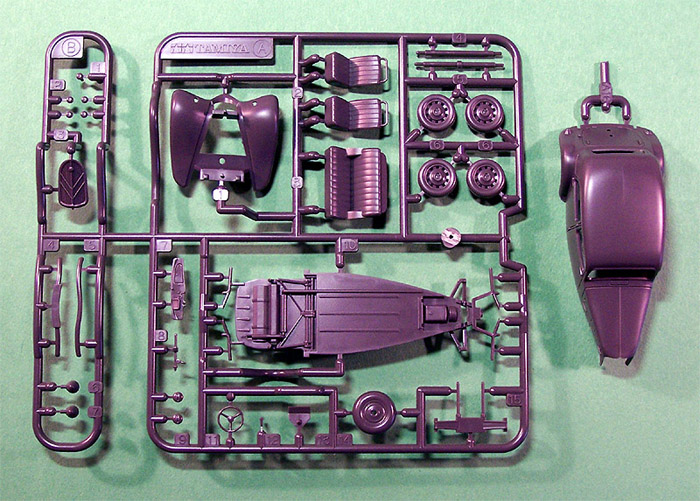
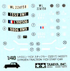

{kind=link}


Tamiya 1/48 Citroen 11CV ‘Traction Avant’

Kit #4803 MSRP $
Images and text Copyright © 2005 by Matt Swan
Developmental Background
Citroen Automobiles was founded in 1919 and had a reputation of being at the forefront of automobile development. The Type A Citroen was their initial offering and its production was based on the same assembly line process that Henry Ford had implemented in the United States. It was one of the first cars to be delivered with bodywork, electric starter, and electric lights as opposed to the conventional process where the consumer purchased a chassis and drive train then found a carriage manufacture to build a body to suit. On March 3rd of 1934 Citroen introduced the B or Type 7 model, which was once again on the leading edge of innovation.
The Type 7 ‘Traction Avant’ which means ‘front wheel drive’ was a sensation. It featured a uni-body design with the four cylinder 1900cc in-line engine and drive train attached as a module to the front of the body assembly, independently sprung front wheels, torsion bar suspension, hydraulic brakes and rubber motor mounts for the engine to reduce vibration. When this car was designed wind tunnels had just become available and the Citroen engineers utilized this technology, which resulted in the elimination of external running boards and a sloped windshield. Citroen changed the designation from Type 7 to 11CV shortly after its introduction but most people simply referred to the car as ‘Tractions’. By 1936 the cars all had boots accessible from the rear and a high-tech rack-and-pinion steering had been added. Road handling and power application were described as “Outstanding” by consumers.
During WWII, the Tractions were a favorite of the French Résistance because of their agility and road holding. Many cars were commandeered by the Luftwaffe and used as staff cars. After the war the factory was rebuilt and production of the automobile resumed. Although never officially imported into the USA by the Citroen factory, a large number of them can be found in this country. Prior to WWII, several hundred 11CVs were imported by the Los Angeles based Challenger Motor Car Company and were actually marketed and sold as Challengers. The 11CV was commonly used as a taxi in Vietnam and a fair number of UK Slough-built 11CVs were made for the right-hand drive market and featured leather interiors, a wooden dash and 12-volt electrical systems. Production of the 11CV ended in 1957 with a total of 759,111 cars having been manufactured in several different plants.
Today many 11CVs are still in operation and have acquired a new nick-name -- Gangster cars, but to find a pre-war model is rare as most gave their lives for the French people.
The Kit

Over the last few years Tamiya has slowly been expanding it’s offerings in 1/48 vehicles and has just recently released this kit of the classic 11CV. This is not a hugely complicated kit with just a single tree of dark gray injection molded pieces and a small sprue of clear parts. The pieces are well detailed and of good quality with crisp recessed panel lines and no visible flash or sink marks. The body of the car comes as a single piece with the hood molded in place. The lack of an engine is slightly disappointing but considering the low price of the kit not entirely unexpected. Interior detail is adequate and includes a dash, wheel and column and separate front seats. Most of the interior details will be barely visible when complete even with the nicely transparent clear parts. The kit offers two styles of headlamps and a nice little collection of exterior detail pieces.
I’ve test fit a few of the parts and them seem to fit quite well. Overall I have a count of thirty-one dark gray pieces and four clear parts for a total of thirty-five pieces in the box.
Decals and Instructions

The kit provides a small sheet of decals that will allow for four different cars to be modeled; a Luftwaffe Staff Car, a car used by an Eastern Front Engineering division, a French army car and a French civilian car. All theses are very drab in their color scheme which is understandable for the military versions but civilian cars were anything but drab. To illustrate my point follow this link for a complete listing of colors used on the cars -- Citroën Traction Avant Colors.
The kit instructions consist of a single long sheet of material that begins with a very good historical background on the vehicle in four languages, four well illustrated exploded view construction steps and a single set of painting and decal placement instructions. Also included is a small paint code chart.
Conclusions
I am very pleased to see this model making it onto store shelves. I feel it is something that has been needed for some time in the 1/48 scale department and is a welcome addition for diorama building. The kit shows all the signs quality we would expect from Tamiya. The parts are all clean, crisp and well molded. They fit together without any trouble. Instructions are clear and to the point. Personally I would have liked to seen a removable hood with an engine but I guess that is something for the aftermarket industry to worry about. The kit recommended colors are okay for the military versions but I hope that modelers building this will explore other options for the civilian versions. I give this kit a very good recommendation and suggest you have one on your shelf to add flavor to your aircraft settings.